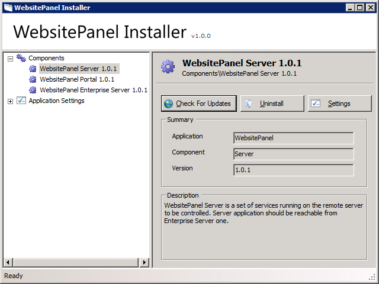
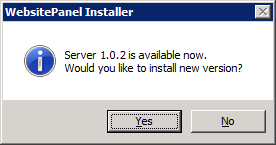

Upgrading WebsitePanel Components
Translations:
To upgrade any WebsitePanel component you should use WSP Installer.
Open WSP Installer, select component in the left navigation menu and then click "Check For Updates" button on its properties page:

If there are any updates available you will see the following confirmation dialog:

Click "Yes" button to proceed with component upgrade.
Please note WSP Installer upgrades WSP component only to the next available version, but not to the most recent one. If you need to update WSP component to the most recent version you have to click "Check For Updates" button once again.
Troubleshooting Upgrade Issues
If you experiencing any issues right after WSP update try the following basic troubleshooting steps:
1. Make sure all WSP components were upgraded to the same version.
2. Reset WebsitePanel components application pools in IIS Manager.